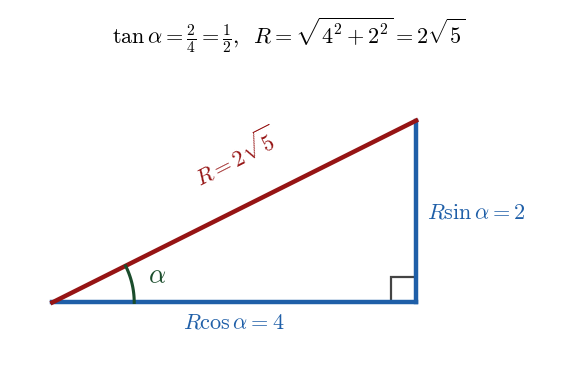
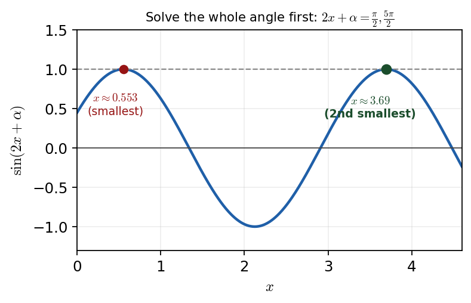

Harry → Phuc • 12 July 2026 tutorial
P3 WMA13/01 — June 2024 — Q4Q4 · Double angle → \(R\sin(2x+\alpha)\) → max & smallest \(x\)

Right triangle for the \(R\)-form: \(R\cos\alpha=4\), \(R\sin\alpha=2\), so \(\tan\alpha=\tfrac12\), \(\alpha=\arctan\tfrac12\approx0.464\) rad, \(R=\sqrt{4^2+2^2}=2\sqrt5\).
Status: fully worked in the lesson — \(a=4,b=2,c=-1\); \(R=2\sqrt5,\ \alpha=\arctan\tfrac12\approx0.464\); \(f_{\max}=2\sqrt5-1\); second smallest \(x\approx3.69\). This is the payoff for the identity drill.
Part (a) · Write as \(a\sin 2x+b\cos 2x+c\)Solved
Hide workingStrategy
Convert each term to a double-angle form using \(\sin 2x=2\sin x\cos x\) and \(\cos 2x=2\cos^2x-1\).
“You really need to know those trig identities to answer that kind of question.”Formula · the \(8\sin x\cos x\) term
\[ 8\sin x\cos x=4\,(2\sin x\cos x)=4\sin 2x. \]
Formula · the \(4\cos^{2}x\) term
From \(\cos 2x=2\cos^2x-1\Rightarrow 2\cos^2x=\cos 2x+1\), so\[ 4\cos^{2}x=2(\cos 2x+1)=2\cos 2x+2. \]
Working · combine
\[ f(x)=4\sin 2x+(2\cos 2x+2)-3=4\sin 2x+2\cos 2x-1. \]
Result
\( f(x)=4\sin 2x+2\cos 2x-1,\qquad a=4,\ b=2,\ c=-1. \)
Sense check
Check \(x=0\): original \(f(0)=0+4-3=1\); new form \(0+2-1=1\) ✓.
Phuc's slips (recorded): Phuc first wrote \(\sin 2x\) with an \(A\) rather than \(x\), reached for the wrong \(\cos 2x\) forms, over-complicated \(8\sin x\cos x\), and got stuck relating \(4\cos^2x\) to \(\cos 2x\). Harry's route: pull the \(4\) out of \(8\sin x\cos x\) to see \(4\sin 2x\), and rearrange \(\cos 2x=2\cos^2x-1\) for \(4\cos^2x\).
Part (b) · Write as \(R\sin(2x+\alpha)+c\)Solved
Carry-inFrom (a): \(f(x)=4\sin 2x+2\cos 2x-1\), so match \(R\sin(2x+\alpha)\) to \(4\sin 2x+2\cos 2x\) and carry \(c=-1\).
Hide workingStrategy
Only the \(a\sin 2x+b\cos 2x\) part is written in \(R\)-form; the constant \(c=-1\) carries straight over. Expand and match coefficients.
Formula · compound-angle expansion
\[ R\sin(2x+\alpha)=R\sin 2x\cos\alpha+R\cos 2x\sin\alpha. \]
Substitute · match \(4\sin 2x+2\cos 2x\)
\[ R\cos\alpha=4,\qquad R\sin\alpha=2. \]
Working · \(\alpha\) by dividing
\[ \tan\alpha=\frac{R\sin\alpha}{R\cos\alpha}=\frac{2}{4}=\frac12 \;\Rightarrow\; \alpha=\arctan\tfrac12\approx0.464\ \text{rad (3 s.f.)}. \]
Working · \(R\) exactly, by squaring and adding
\[ R^{2}=(R\cos\alpha)^2+(R\sin\alpha)^2=4^{2}+2^{2}=20 \;\Rightarrow\; R=\sqrt{20}=2\sqrt5\ (\text{exact}). \]
Result
\( f(x)=2\sqrt5\,\sin(2x+\alpha)-1,\quad R=2\sqrt5,\ \alpha=\arctan\tfrac12\approx0.464\ \text{rad}. \)
Sense check
\(0<\alpha<\tfrac\pi2\) ✓ (both \(R\cos\alpha,\,R\sin\alpha>0\)); the rounded \(0.464\) is a 3-s.f. approximation, not an exact value.
Phuc's slip (recorded): Phuc wrote \(R=4.472\). Harry: “This would be wrong because we want the exact value of \(R\), not a decimal. Exact, no decimals allowed” \(\Rightarrow R=2\sqrt5\). Also check the question: \(\alpha\) is wanted in radians, to 3 s.f.
Part (c)(i) · Maximum value of \(f(x)\)Solved
Carry-inFrom (b): \(f(x)=2\sqrt5\,\sin(2x+\alpha)-1\).
Hide workingStrategy
\(\sin(\cdot)\) has maximum \(1\); substitute into the \(R\)-form.
Substitute the maximum of sine
\[ f_{\max}=2\sqrt5\,(1)-1=2\sqrt5-1\ (\text{exact}). \]
Result
\( f_{\max}=2\sqrt5-1 \)
Phuc did this well (recorded): Phuc correctly took \(\sin=1\) to give the maximum \(2\sqrt5-1\).
Part (c)(ii) · Second smallest positive \(x\) at the maximumSolved
Carry-inFrom (b): maximum when \(\sin(2x+\alpha)=1\), \(\alpha\approx0.464\).
Hide workingStrategy
The maximum occurs when \(\sin(2x+\alpha)=1\). Write down all solutions for the
whole angle \(2x+\alpha\) first, then rearrange for \(x\).
Formula · where \(\sin=1\)
\[ 2x+\alpha=\frac{\pi}{2},\ \frac{5\pi}{2},\ \frac{9\pi}{2},\dots \quad(\text{steps of }2\pi). \]
Working · smallest positive \(x\)
\[ 2x+0.464=\frac{\pi}{2}\Rightarrow x=\frac{\pi/2-0.464}{2}\approx0.553. \]
Working · second smallest positive \(x\)
\[ 2x+0.464=\frac{5\pi}{2}\Rightarrow x=\frac{5\pi/2-0.464}{2}\approx3.69\ (3\text{ s.f.}). \]
Result
\( x\approx3.69\ (3\text{ s.f.}) \)
Sense check
The two maxima on the graph are at \(x\approx0.553\) then \(x\approx3.69\); the second is the required answer. \(3.694\to3.69\) to 3 s.f.

\(\sin(2x+\alpha)\) reaches \(1\) at \(2x+\alpha=\tfrac\pi2,\tfrac{5\pi}2\); solving the whole angle first gives \(x\approx0.553\) (smallest) then \(x\approx3.69\) (second smallest).
The headline mistake of the lesson (recorded): Phuc found the first \(x\) and then added \(2\pi\) to that \(x\). Harry: “ones are two pi apart, but these ones, when you've rearranged, are not two pi apart” — the \(2\pi\) periodicity belongs to the angle \(2x+\alpha\), before you divide by 2. Rule: list all whole-angle solutions first, then rearrange for \(x\). Also \(3\) s.f. \(\ne\) 3 d.p. (\(3.694\to3.69\)).